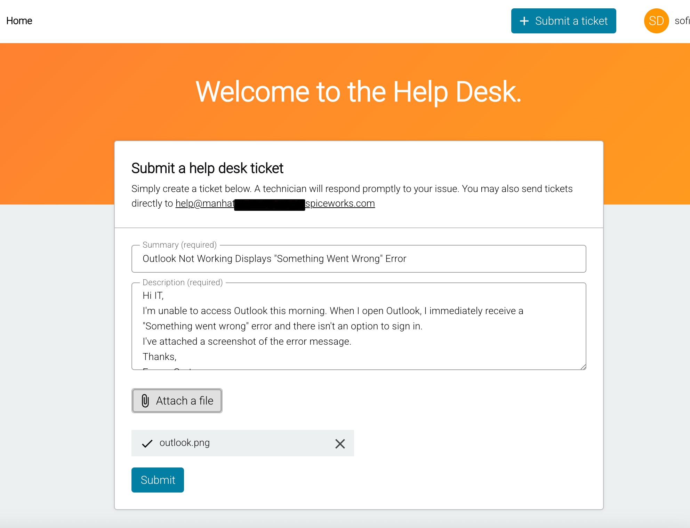
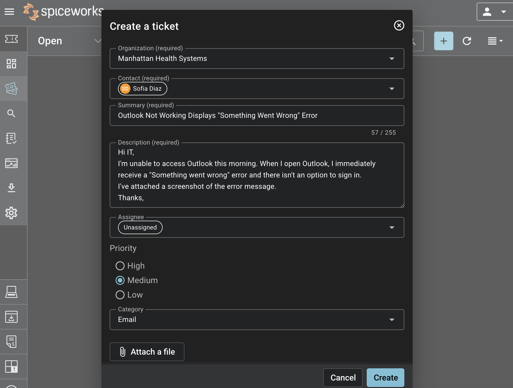
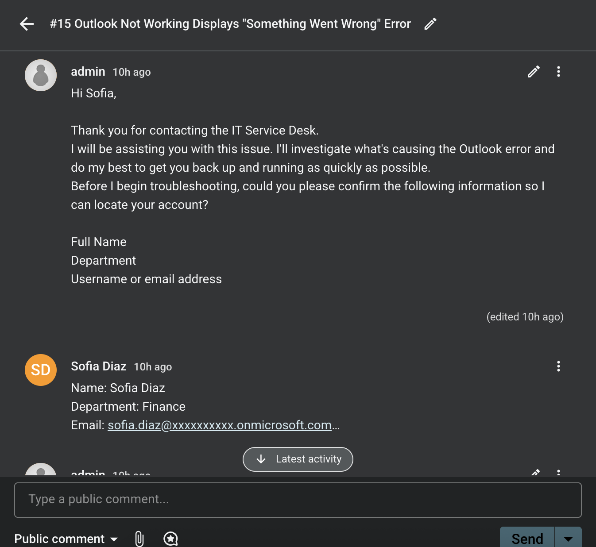
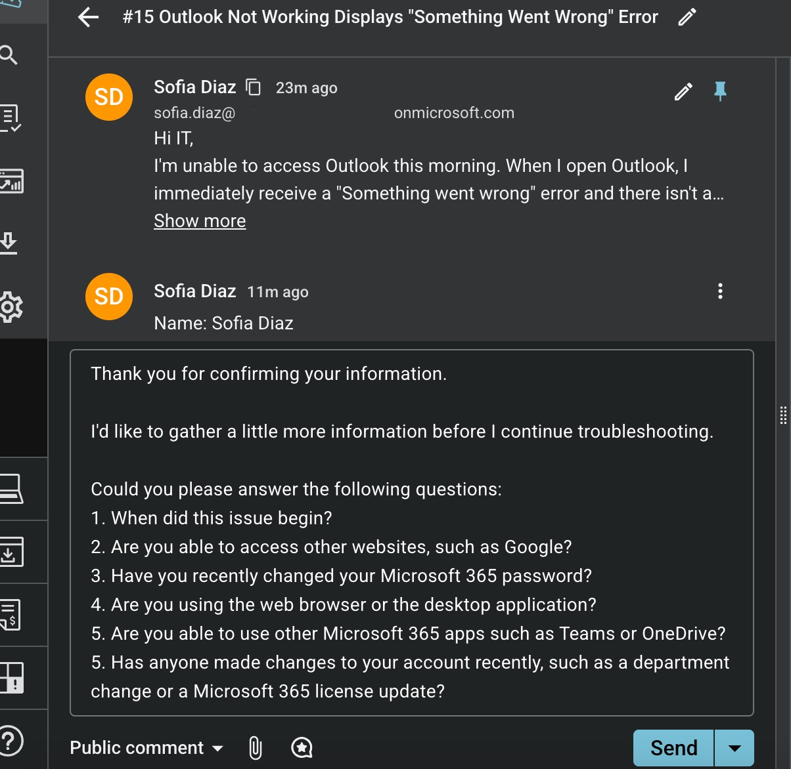
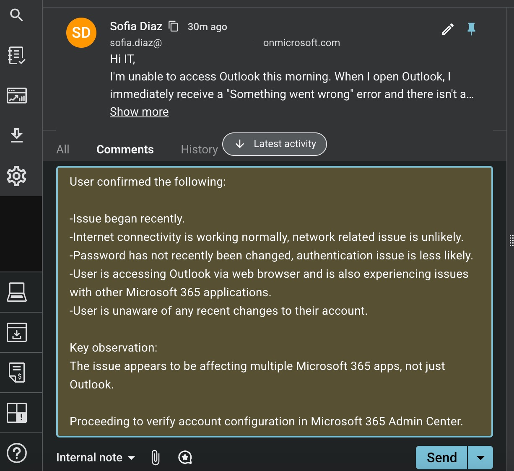
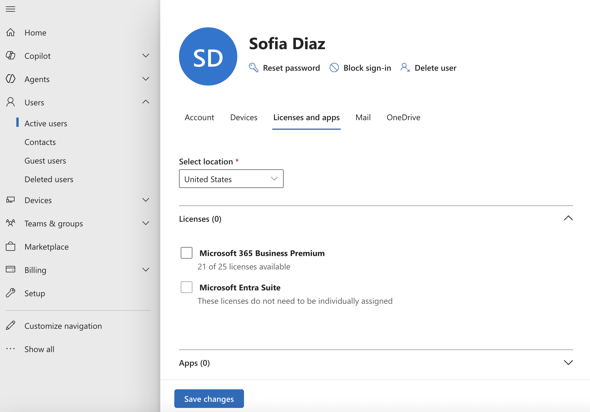
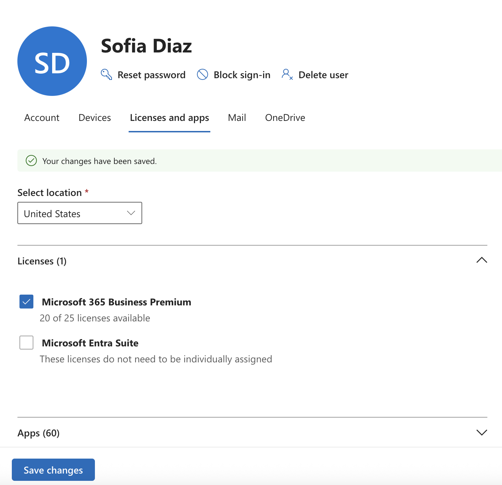

The objective of this project is to simulate a real enterprise IT environment. I created a fictional large
healthcare organization called Manhattan Health Systems (for educational purposes only). This lab
demonstrates core Microsoft 365 administration tasks, including onboarding new users, creating security
groups in Microsoft Entra ID, assigning roles and configuring secure user authentication. It also includes
troubleshooting real IT support tickets using Spiceworks ITSM.
Company Environment
To simulate a real enterprise IT environment, I created two IT users accounts and three end-user accounts
representing different departments.
The IT Administrator was assigned full administrative permissions, Help Desk Technician was granted limited
permissions to perform common support tasks. Three standard users from Human Resources, Finance, and
Marketing department.
Emma Carter
HR Manager
Sofia Diaz
Financial Analyst
Olivia Cooper
Marketing Coordinator
Jordan Lee
Helpdesk Administrator
Administrator
Global Administrator
User Provisioning Through Microsoft 365 Admin Center
User accounts were created through the Microsoft 365 Admin Center. During account creation, each user was
assigned a temporary password and required to change it upon their first sign-in. Microsoft 365 Business
Premium licenses were then assigned, and a email was sent with instructions on how to access Microsoft 365
applications.
Security Groups & Membership Management
To organize users, I created security groups in Microsoft Entra ID.
This lab demonstrates both Assigned and Dynamic membership.
Assigned Membership
Users are manually added or removed by an administrator.
This provides greater control and makes it easier to manage
individual users when exceptions are required.
Dynamic Membership
Users are automatically added or removed based on predefined
user attributes, reducing manual administration in larger
environments.
The HR security group uses Assigned Membership, where users were manually added by an administrator.
The Finance security group uses Dynamic Membership, automatically adding users whose Department attribute is
set to Finance.
An All Company Users dynamic group was also created to automatically include every new employee added to the
Microsoft 365 tenant.
Understanding both membership methods is important in enterprise
administration. Dynamic groups simplify management for large
organizations by automating membership, while Assigned groups
provide administrators with precise control whenever individual
exceptions are required.
Assigning Roles through Microsoft Entra ID
I configured roles in Microsoft Entra ID. You can also assign through the Microsoft Admin Center. Each
account was assigned only the permissions required to perform its responsibilities, following the principle
of least privilege.
IT Administrator (Admin)
Assigned the Global Administrator role with full administrative access to
manage users, Microsoft 365 licenses, security groups, administrative roles, and overall Microsoft
Entra ID configuration.
Help Desk Technician (Jordan)
Assigned the Helpdesk Administrator role to perform common IT support tasks, including password
resets and user account management, while operating with limited administrative permissions.
Department Users
Standard user accounts representing Human Resources,
Finance, and Marketing with access limited to everyday business resources.
Microsoft 365 Licensing
After organizing users and security groups, I assigned Microsoft 365 Business Premium licenses
using multiple enterprise licensing methods to understand their operational advantages.
Assigned Microsoft 365 Business Premium licenses during user creation.
Assigned licenses directly to individual users.
Assigned licenses through Microsoft Entra ID security groups.
Verified successful license assignment and service activation.
Group-based licensing reduces administrative overhead for large organizations by automatically licensing
members of a security group. Individual licensing, however, provides greater flexibility when managing
exceptions, temporary users, contractors, or department-specific requirements.
Understanding when to use each licensing strategy is an important responsibility for Microsoft 365
administrators.
User Authentication & First Sign-In
After provisioning, users authenticated with their temporary credentials and completed the required password
change
during their first sign-in. This follows Microsoft's recommended onboarding process and ensures only the
user knows
their permanent password.
Emma Carter successfully authenticated into her Microsoft account and
signed in to Outlook, confirming that her user account, Microsoft 365 Business Premium license, and Exchange
Online mailbox were provisioned correctly. She also received the Microsoft 365 welcome email.
Department Shared Mailboxes
To improve communication between departments, I configured shared mailboxes. Shared mailboxes allow multiple
employees to
receive, read, and respond to emails from a single departmental address without
sharing individual user passwords.
Using the Microsoft 365 Admin Center, I navigated to
Teams & Groups → Shared Mailboxes and created departmental
shared mailboxes for:
Human Resources
Finance
Marketing
IT Support
After creating each shared mailbox, I assigned users to their respective
department so they could access and manage shared communications.
IT Support Shared Mailbox
The IT Support shared mailbox was assigned to both the
Global Administrator and the
Help Desk Technician (Jordan). This allows either technician to
monitor incoming requests and respond from a single IT Support email address.
Outlook Configuration
To verify access, I signed into Outlook using both the Administrator and
Jordan's Help Desk account. I added the shared mailbox by selecting
Add Shared Folder or Mailbox and entering the IT Support shared
mailbox email address.
Once configured, both users had access to:
Their personal Outlook mailbox
The shared IT Support mailbox
Verification & Testing
To verify the shared mailbox was functioning correctly, I signed into Outlook
as Emma Carter and sent an email to the IT Support shared mailbox.
Both Jordan and the Administrator were able to view the same email sent by Emma from the shared mailbox,
confirming that the mailbox was properly configured and accessible to all assigned members.
IT Support Ticket Workflow Using Spiceworks
Finance employee Sofia Diaz submitted an IT support ticket reporting that Outlook displayed a "Something
Went Wrong" error and could not be accessed. I investigated the issue using a structured help desk
troubleshooting process to identify the root cause and restore access.

Sofia submits a support request through the organization's help desk portal.

An IT Support Technician can also create a ticket on behalf of a user.
Troubleshooting
I acknowledged the user's request and reassured her that I was actively investigating the issue. I first
verified the user's identity and department to locate the correct Microsoft 365 account. Rather than making
assumptions or troubleshooting at random, I gathered additional information by asking targeted questions to
narrow down the possible root cause before beginning my investigation.
Verified the user's identity and department
Asked clarifying questions to gather additional information.
Documented the user's responses and identified potential root causes.
Investigated the user's Microsoft 365 account configuration.



Root Cause & Resolution
While reviewing the user's account in the Microsoft 365 Admin Center, I discovered
that the Microsoft 365 Business Premium license had been removed.
Without an assigned license, the user could not access Outlook, Teams, OneDrive,
or other Microsoft 365 services.
I reassigned the license, restoring access to all Microsoft 365 applications.


Verification & Closure
After reassigning the Microsoft 365 Business Premium license, I followed up with the user and asked her to
sign in again to verify that Outlook was working correctly.
Sofia successfully signed in to Outlook and also confirmed that all Microsoft 365 services were working normally.
I then documented the root cause, recorded the resolution steps and closed the ticket.